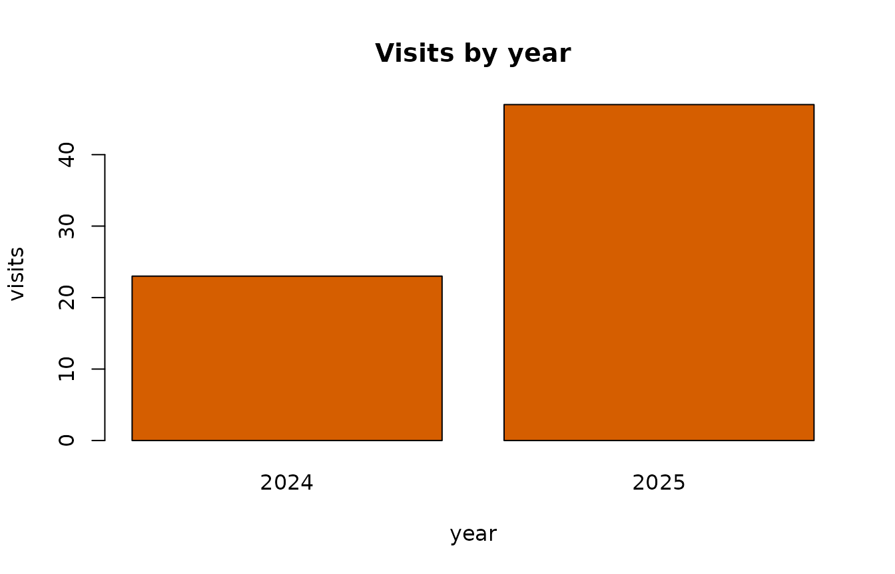
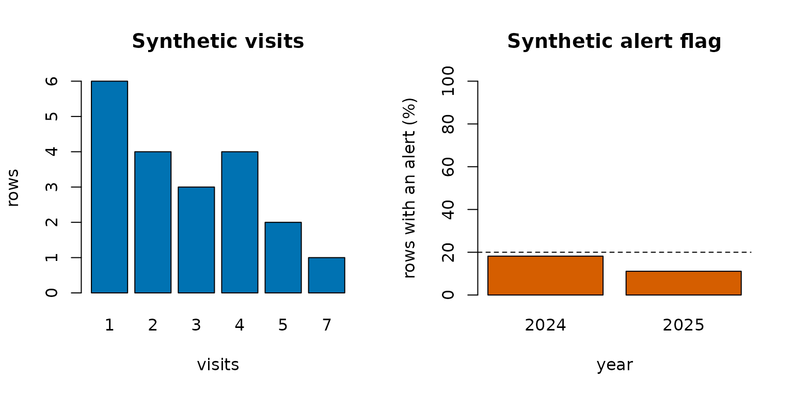
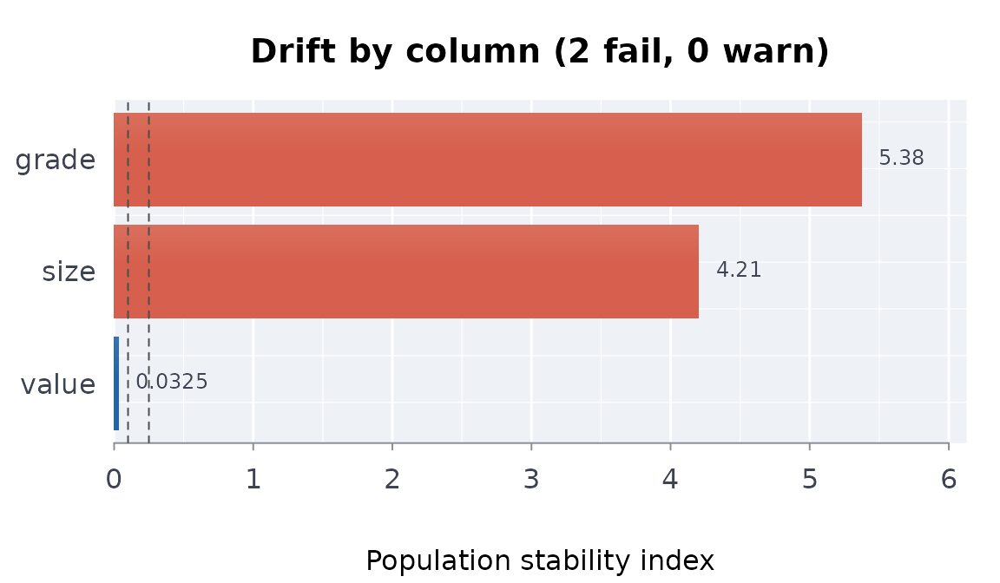
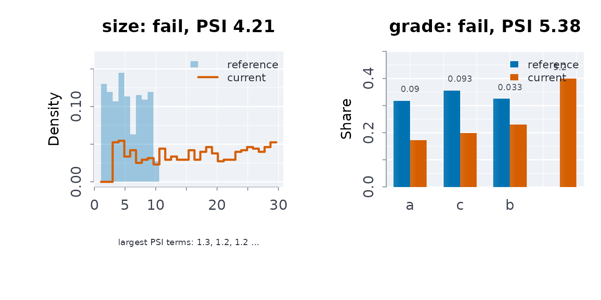
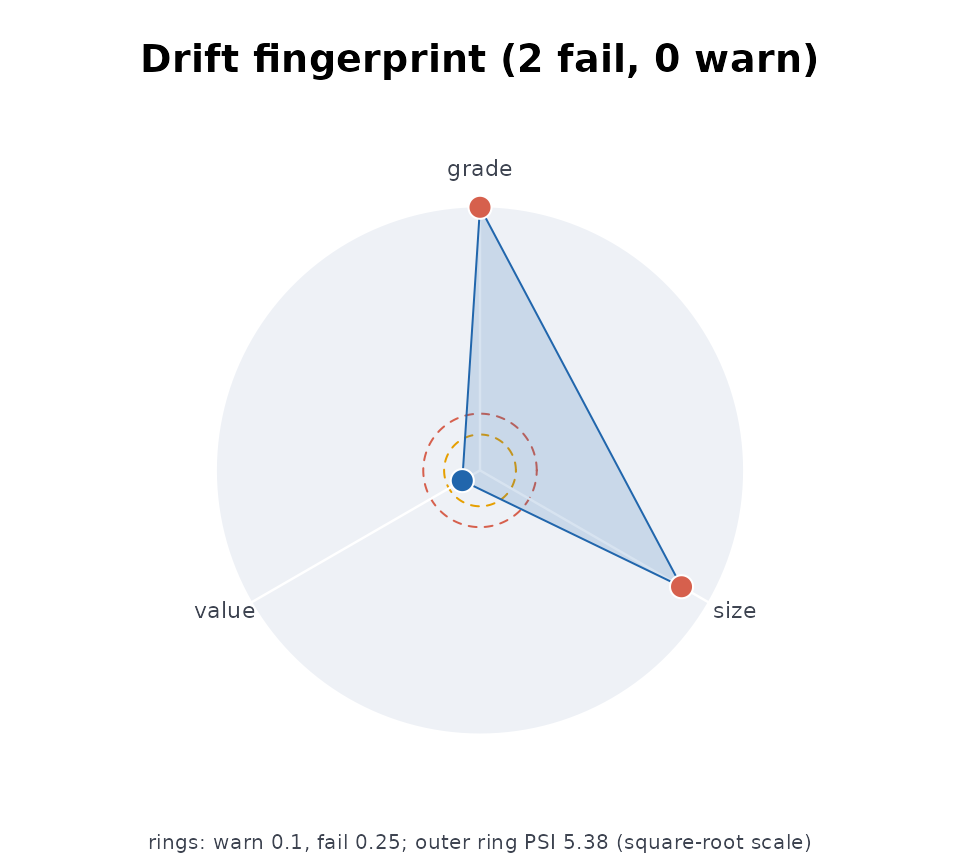
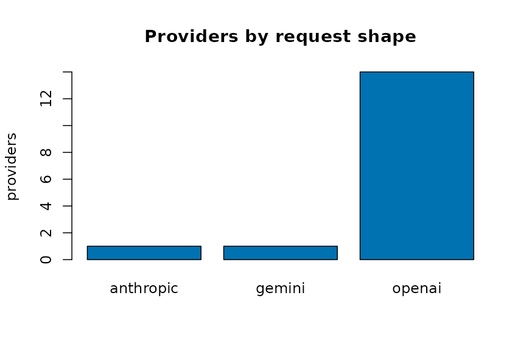
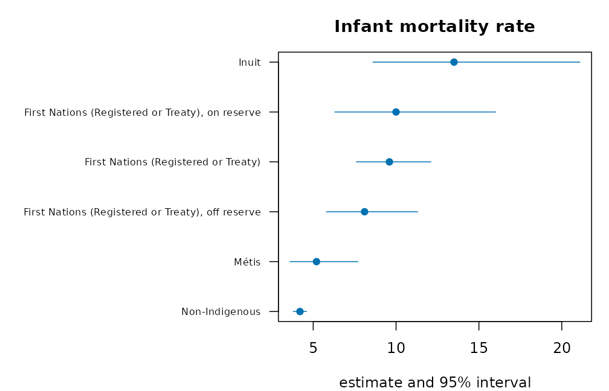

Your first capsule: a published table, analysed and recorded
Most published administrative data arrives as a table of counts by period and group. The questions are always the same: what changed, how sure can we be, is there a trend, and is this release the one we had before. This vignette answers them for one real table in twenty lines, then records the run so someone else can repeat it.
The table
Ontario publishes the number of distinct individuals held in restrictive confinement each fiscal year, by age category and gender. A tidy copy of the published figures ships with the package.
library(rmoriebricklayer)
otis <- read.csv(system.file("extdata", "otis_a01_individuals.csv",
package = "rmoriebricklayer"))
otis
#> table group year individuals
#> 1 age_category 18 to 24 2023 3507
#> 2 age_category 18 to 24 2024 2944
#> 3 age_category 18 to 24 2025 3688
#> 4 age_category 25 to 49 2023 14930
#> 5 age_category 25 to 49 2024 14445
#> 6 age_category 25 to 49 2025 18482
#> 7 age_category 50+ 2023 2344
#> 8 age_category 50+ 2024 2252
#> 9 age_category 50+ 2025 2875
#> 10 gender Female 2023 1511
#> 11 gender Female 2024 1924
#> 12 gender Female 2025 2821
#> 13 gender Male 2023 19270
#> 14 gender Male 2024 17717
#> 15 gender Male 2025 22224One call
a <- anltab(otis, value = "individuals", prd = "year",
by = c("table", "group"))
a
#> Analysis of `individuals` by year over 3 period(s) (2023 to 2025), grouped by table x group
#> rows 15, columns 4; no missing values
#> change: 10 comparison(s), 9 significant after BH at 0.05
#> trend: 0 of 5 series with Mann-Kendall p < 0.05The change table carries an exact interval for every percent change and a p-value that is exact too. Five groups are compared twice each, so the p-values are adjusted over the scan (Benjamini-Hochberg) before any row is called significant. A row that looks striking on its own is judged in the company of the other nine.
a$change[, c("table", "group", "year", "value", "previous",
"pctchg", "pctlo", "pctup", "padj",
"significant")]
#> table group year value previous pctchg pctlo pctup
#> 1 age_category 18 to 24 2023 3507 NA NA NA NA
#> 2 age_category 18 to 24 2024 2944 3507 -16.053607 -20.094317 -11.813237
#> 3 age_category 18 to 24 2025 3688 2944 25.271739 19.315638 31.533918
#> 4 age_category 25 to 49 2023 14930 NA NA NA NA
#> 5 age_category 25 to 49 2024 14445 14930 -3.248493 -5.443046 -1.003220
#> 6 age_category 25 to 49 2025 18482 14445 27.947387 25.185677 30.771917
#> 7 age_category 50+ 2023 2344 NA NA NA NA
#> 8 age_category 50+ 2024 2252 2344 -3.924915 -9.363927 1.838757
#> 9 age_category 50+ 2025 2875 2252 27.664298 20.771500 34.963148
#> 10 gender Female 2023 1511 NA NA NA NA
#> 11 gender Female 2024 1924 1511 27.332892 18.974672 36.297285
#> 12 gender Female 2025 2821 1924 46.621622 38.316800 55.450157
#> 13 gender Male 2023 19270 NA NA NA NA
#> 14 gender Male 2024 17717 19270 -8.059159 -9.920858 -6.159393
#> 15 gender Male 2025 22224 17717 25.438844 22.981369 27.946827
#> padj significant
#> 1 NA FALSE
#> 2 3.164937e-12 TRUE
#> 3 1.664477e-19 TRUE
#> 4 NA FALSE
#> 5 5.269786e-03 TRUE
#> 6 3.609584e-109 TRUE
#> 7 NA FALSE
#> 8 1.794906e-01 FALSE
#> 9 6.794641e-18 TRUE
#> 10 NA FALSE
#> 11 2.786935e-12 TRUE
#> 12 2.223495e-38 TRUE
#> 13 NA FALSE
#> 14 1.161620e-15 TRUE
#> 15 8.427443e-112 TRUEWhat the release withheld
Published counts are often rounded. If this table had been rounded to
the nearest five, each cell could have come from any count within two
and a half of it, and the percent change inherits that.
rounding = 5 adds the envelope and a combined interval that
is the union of the sampling interval and the envelope: the honest range
for a number read off a rounded table. Suppressed cells
("x", "<5") are handled the same way
through suplim.
b <- anltab(otis, value = "individuals", prd = "year",
by = c("table", "group"), rnd = 5)
b$change[!is.na(b$change$previous),
c("group", "year", "pctchg", "pctlo", "pctup",
"compctlo", "compctup")]
#> group year pctchg pctlo pctup compctlo compctup
#> 1 18 to 24 2024 -16.053607 -20.094317 -11.813237 -20.094317 -11.813237
#> 2 18 to 24 2025 25.271739 19.315638 31.533918 19.315638 31.533918
#> 3 25 to 49 2024 -3.248493 -5.443046 -1.003220 -5.443046 -1.003220
#> 4 25 to 49 2025 27.947387 25.185677 30.771917 25.185677 30.771917
#> 5 50+ 2024 -3.924915 -9.363927 1.838757 -9.363927 1.838757
#> 6 50+ 2025 27.664298 20.771500 34.963148 20.771500 34.963148
#> 7 Female 2024 27.332892 18.974672 36.297285 18.974672 36.297285
#> 8 Female 2025 46.621622 38.316800 55.450157 38.316800 55.450157
#> 9 Male 2024 -8.059159 -9.920858 -6.159393 -9.920858 -6.159393
#> 10 Male 2025 25.438844 22.981369 27.946827 22.981369 27.946827Trend
Three fiscal years is a short series. The Mann-Kendall test is exact for it, and its smallest possible p-value with three points is one third, so no trend can be declared from three years; the table says so instead of hiding it. The Poisson rate ratio per year is still informative as a description.
a$trend
#> table group periods first last tau trndp slope
#> 1 age_category 18 to 24 3 3507 3688 0.3333333 1.0000000 90.5
#> 2 age_category 25 to 49 3 14930 18482 0.3333333 1.0000000 1776.0
#> 3 age_category 50+ 3 2344 2875 0.3333333 1.0000000 265.5
#> 4 gender Female 3 1511 2821 1.0000000 0.3333333 655.0
#> 5 gender Male 3 19270 22224 0.3333333 1.0000000 1477.0
#> rateratio rateratiolo rateratioup
#> 1 1.027143 0.2491778 4.234015
#> 2 1.118024 0.4111145 3.040459
#> 3 1.112728 0.4023851 3.077062
#> 4 1.376319 0.8250989 2.295790
#> 5 1.077781 0.3556341 3.266310Has the data changed since last time?
Keep the previous release and pass it as prior; every
column is screened. Before trusting a drift verdict, ask how often the
screens fire on data that has not changed: drftcal() splits
one release into random halves and reports the false-alarm rate per
column.
drftcal(otis, n = 10)
#> Drift screens on 10 identical re-fetches (alpha = 0.01)
#> at least one column flagged: 0% of re-fetches
#> no column fired on identical data
#> per-screen alpha for a family-wise 0.01: 0.0025Stock and flow
A count of people in confinement on a day is a stock; the people who
pass through in a year are a flow. Lakner’s decomposition ties them
exactly: average daily population is person-days over the days in the
period, average length of stay is person-days over the people served,
and the identity adp = admissions * alos / t means a change
in days must multiply out of a change in people and a change in stay.
stkflow() reports both sides and checks the identity.
sf <- stkflow(days = c(21900, 23725, 20440), people = c(300, 325, 280),
prd = c(2022, 2023, 2024), t = 365)
sf
#> ── Stock and flow over 3 periods ─────────────────────────────────
#> period people days alos adp
#> 2022 300 21900 73 60
#> 2023 325 23725 73 65
#> 2024 280 20440 73 56
#>
#> 2022 to 2024: people -6.7%, stay +0.0%, days -6.7%
#> ──────────────────────────────────────────────────────────────────A population that rose while stays shortened, or fell while stays
lengthened, reads differently from one where both moved together;
adp(), alos() and admits() give
the single measures.
Stock and flow
A count of people in confinement on a day is a stock; the people who
pass through in a year are a flow. Lakner’s decomposition ties them
exactly: average daily population is person-days over the days in the
period, average length of stay is person-days over the people served,
and the identity adp = admissions * alos / t means a change
in days must multiply out of a change in people and a change in stay.
stkflow() reports both sides and checks the identity.
sf <- stkflow(days = c(21900, 23725, 20440), people = c(300, 325, 280),
prd = c(2022, 2023, 2024), t = 365)
sf
#> ── Stock and flow over 3 periods ─────────────────────────────────
#> period people days alos adp
#> 2022 300 21900 73 60
#> 2023 325 23725 73 65
#> 2024 280 20440 73 56
#>
#> 2022 to 2024: people -6.7%, stay +0.0%, days -6.7%
#> ──────────────────────────────────────────────────────────────────A population that rose while stays shortened, or fell while stays
lengthened, reads differently from one where both moved together;
adp(), alos() and admits() give
the single measures.
Other published tables
The same approach works on any table with an estimate and its
interval. The package also bundles Statistics Canada estimates of First
Nations, Metis and Inuit health and mental health
(?indiex). vignette("applied-analyses")
analyses them: by distinction, with suppressed cells never imputed, and
with wellness reported beside distress.
Record it
rptanl() writes the whole analysis as Markdown or a
single HTML file, and usecpstmpl() writes a folder with the
provenance file, an analysis.R that pins the source bytes
and runs the steps above, and a README. The template runs as written
against this table.
d <- usecpstmpl(tempfile("capsule-"), ex = TRUE)
list.files(d)
#> [1] "analysis.R" "data_provenance.json" "README.md"
cat(readLines(file.path(d, "analysis.R"))[1:12], sep = "\n")
#> # Reproducible capsule: fetch, verify, analyse, record.
#> # Run with: Rscript analysis.R
#> library(rmoriebricklayer)
#> arg <- grep("^--file=", commandArgs(), value = TRUE)
#> here <- if (length(arg)) dirname(normalizePath(sub("^--file=", "", arg[1]))) else getwd()
#> prov <- loadprov(file.path(here, "data_provenance.json"))
#>
#> # 1. Fetch (a local path is read directly; a URL is downloaded with a
#> # Wayback Machine fallback) and pin the bytes.
#> src <- prov$source$url
#> local <- if (file.exists(src)) src else
#> fdl(src, file.path(here, basename(src)))From here, replace the source URL and the column names in
data_provenance.json, run Rscript analysis.R,
and copy the SHA-256 it prints back into the provenance file. Later runs
refuse to proceed if the bytes change, and mnfrcmp()
compares two runs number by number.

Building reproducible data capsules
rmoriebricklayer turns “the data was downloaded from the
portal at some point” into a verifiable, self-contained record: a
capsule. A capsule pins where the data came from, what
its bytes hashed to, what shape it must have, and — when the portal is
unreachable — how to synthesize a stand-in so the pipeline still runs
end-to-end.
This vignette walks the essential flow with a small, fully offline example:
- pin a source in a provenance record,
- validate data against the pinned schema,
- verify file integrity with SHA256,
- fall back to schema-driven synthetic data,
- account for every step in a manifest and plain-language summary.
1. The provenance record
Everything starts from a data_provenance.json file: the
machine-readable pin of a project’s data source. It records the portal
endpoint, a pattern identifying the right resource, the expected SHA256,
the schema the data must satisfy, and a recipe for synthesizing a
stand-in.
provjson <- '{
"dataset": {
"title": "Demo library statistics",
"ckan_api_endpoint": "https://data.ontario.ca/api/3/action/package_show?id=ontario-public-library-statistics"
},
"resource": { "name_match_pattern": "2014" },
"schema": {
"expected_columns": ["year", "visits", "alert"],
"structural_invariants": { "min_data_rows": 5 },
"expected_value_sets": { "year": [2024, 2025] },
"synthetic_recipe": {
"n_rows": 25,
"seed": 42,
"columns": {
"year": { "type": "sample", "values": [2024, 2025] },
"visits": { "type": "poisson", "lambda": 3, "min": 1 },
"alert": { "type": "bernoulli", "p": 0.2 },
"id": { "type": "id_pattern", "pattern": "p-{seq:05d}" }
}
}
}
}'
provpath <- file.path(tempdir(), "data_provenance.json")
writeLines(provjson, provpath)
prov <- loadprov(provpath)
prov$dataset$title
#> [1] "Demo library statistics"2. Resolving the live source (network)
On a machine with network access, the resolvers turn the pinned endpoint into a current download URL — surviving portal-side resource-UUID churn. CKAN powers data.ontario.ca, data.gov.uk, and data.gov; Socrata and ArcGIS resolvers cover the Chicago/NYC/Calgary and Toronto Police portals.
url <- rslvckan(prov) # package_show + name match
if (is.null(url)) # slug-change fallback
url <- rslvckns(prov)
path <- file.path(tempdir(), "data.csv")
fdl(url, path) # plain-language failure diagnosis
# + automatic Wayback fallbackThis vignette stays offline, so we go straight to the fallback path.
3. Synthetic fallback: the pipeline always runs
When the real source is down, mksyncsv() generates a
reproducible stand-in from the recipe pinned in the provenance itself.
Results from synthetic data are marked as such all the way through (see
the manifest below) — the point is to keep the pipeline
testable, never to pass synthetic output off as real.
4. Integrity and schema validation
Every file gets a SHA256; every data frame is checked against the
pinned schema. valsch() reports issues without raising, so
callers choose the severity response; schval() is the
strict wrapper (fatal issues stop, drift warns).
digest <- sha256file(datapath)
substr(digest, 1, 16)
#> [1] "e2f4b6752a2e3b56"
chk <- vrfsha256(datapath, digest)
chk$match
#> [1] TRUE
issues <- valsch(df, prov)
length(issues) # 0 = clean against the pinned schema
#> [1] 05. The manifest: account for everything
mkmnf() + recrd() accumulate named
cross-checks (each PASS / DIFFER / INFO), and the writers produce the
two capsule artifacts: a machine-readable manifest.json and
a human-readable SUMMARY.txt.
man <- mkmnf(
list(project = "demo-study", author = "A. Author", synthetic = TRUE),
env = FALSE # TRUE also snapshots R/OS/package versions
)
man <- recrd(man, "rowsgenerated", obs = gen$rows, expd = 25)
#> rowsgenerated observed = 25.0000 expected = 25.0000 [INFO]
man <- recrd(man, "meanvisits",
obs = mean(df$visits), expd = 3,
tol = 1, syn = TRUE)
#> meanvisits observed = 2.8000 expected = 3.0000 [INFO]
outdir <- file.path(tempdir(), "capsule-demo")
dir.create(outdir, showWarnings = FALSE)
wrmnfjs(man, file.path(outdir, "manifest.json"))
summarypath <- wrsmrytxt(
man, outdir,
paths = list(input = datapath, results = outdir),
whatwasdone = c("* generated synthetic stand-in (real source offline)",
"* validated schema and recorded cross-checks")
)
cat(readLines(summarypath)[7:12], sep = "\n")
#> Project: demo-study
#> Author: A. Author
#> When: 2026-10-21 15:09:49 UTC
#> OS: Linux
#> R: R version 4.6.1 (2026-06-24)
#> Mode: SYNTHETIC (not real data -- pipeline check only)The capsule directory now contains everything a reviewer needs to trace the run: the exact inputs, their digests, every cross-check with its status, and a plain-language account — reproducible years later even if the portal has moved on.
Where this sits in the MORIE family
rmoriebricklayer is the provenance/reproducibility layer
under rmorie and rmoriedata; both
link against its compiled core
(LinkingTo: rmoriebricklayer) for shared SHA-256 and
summary-statistic kernels (csha256(), cmn(),
cvari(), ccorr()).
A capsule for an Indigenous health table
The same steps pin a Statistics Canada table: write it, record its digest, and describe it in a manifest that names its source and licence.
d <- indiex("wellbeing")
f <- file.path(tempdir(), "indigenous_wellbeing.csv")
utils::write.csv(d, f, row.names = FALSE)
h <- sha256file(f)
m <- mkmnf(list(dataset = "indigenouswellbeing", rows = nrow(d), sha256 = h,
source = "Statistics Canada, Indigenous Peoples Survey 2022",
licence = "Statistics Canada Open Licence"),
env = FALSE)
vrfsha256(f, h)
#> $actual
#> [1] "c4b3e61f660856d89b302f1050393f99d84363ad7540b838ebecfbac5e4e5c2a"
#>
#> $expected
#> [1] "c4b3e61f660856d89b302f1050393f99d84363ad7540b838ebecfbac5e4e5c2a"
#>
#> $match
#> [1] TRUEThe capsule’s tables in a picture
The capsule records these two tables. The first shows the published estimates and their intervals; the second shows the visits counted in each year.
ci_plot <- function(t, lab, main) {
o <- order(t$estimate)
t <- t[o, ]
y <- seq_len(nrow(t))
op <- par(mar = c(4, 10, 3, 1))
on.exit(par(op))
plot(t$estimate, y, xlim = range(t$lower, t$upper, na.rm = TRUE), yaxt = "n", pch = 19,
col = blpal()[1], xlab = "estimate and 95% interval", ylab = "", main = main)
segments(t$lower, y, t$upper, y, col = blpal()[1])
axis(2, y, lab[o], las = 1, cex.axis = 0.7)
}
t1 <- d[d$indicator == d$indicator[1], ]
ci_plot(t1, t1$group, t1$indicator[1])
v <- tapply(df$visits, df$year, sum)
barplot(v, col = blpal()[2], main = "Visits by year", xlab = "year", ylab = "visits")
Provenance you can verify
A manifest with a SHA-256 in it proves the data was not corrupted. It proves nothing about who produced it, because anyone who can edit the data can recompute the digest and write it back.
This vignette covers the three things that close that gap: signing a manifest, pinning a capsule chunk by chunk, and making the history of runs tamper-evident rather than only each run.
Signing: a shared secret
The simplest case is one team, one secret. cpssign()
with scheme = "hmac" produces an HMAC-SHA-256 tag: only a
key holder can compute it, so only a key holder can produce a manifest
that verifies.
manifest <- paste0(
"source=https://example.org/extract.csv\n",
"sha256=", csha256("id,value\n1,2\n"), "\n",
"fetched=2026-09-12"
)
sig <- cpssign(csha256(manifest), key = "team-secret",
scheme = "hmac")
cpsvrf(csha256(manifest), sig, "team-secret")
#> [1] TRUEAn edited manifest has a different digest, which the signature does not cover:
edited <- sub("fetched=2026-09-12", "fetched=2026-01-01", manifest)
cpsvrf(csha256(edited), sig, "team-secret")
#> [1] FALSEDo not carry raw key bytes around by hand. drvkey()
stretches a passphrase into a full-width key with PBKDF2:
# Fixed here so the vignette is reproducible. For a real key the salt
# comes from rndbytes(16), which reads the operating system's
# CSPRNG rather than R's generator.
salt <- "9f2c41a7d8e05b36"
key <- drvkey("correct horse battery staple", salt)
nchar(key)
#> [1] 64The salt is not secret and must be stored beside the capsule – without the same salt and iteration count, the key cannot be re-derived.
HMAC is symmetric, so anyone who can verify can also sign. That is fine within one team and useless for publishing.
Signing: a public verifier, after quantum
For a verifier who should be able to check but not forge, the signature has to be asymmetric. The classical options (RSA, Ed25519) fall to Shor’s algorithm.
Worth being precise about what that threatens. Hashing is fine: Grover’s algorithm only halves the security exponent, so SHA-256 retains roughly 2^128 preimage resistance, and HMAC with a 256-bit key is likewise fine. Signatures are the part that breaks.
pqckg() builds a hash-based signing key – a Merkle tree
over Winternitz one-time keys, the RFC 8391 construction, over the
SHA-256 this package already ships. Its security rests on the hash
function alone: no lattice assumption, no elliptic curve, and no new
system dependency.
# Small for the vignette; the default height 10 gives 1024 signatures.
signingkey <- pqckg(height = 3)
signingkey
#> ── Signing key (post-quantum) ────────────────────────────────────
#> scheme xmss-sha256
#> root e60fb6c3a24a8a5d3267e350890e1c54198efe861d54f1e20b7c7adc189aacf7
#> height 3
#> used 0 of 8 signatures
#> remaining 8
#> secret <withheld>
#> ! one signature per index; never sign twice at one index
#> ──────────────────────────────────────────────────────────────────Publish the public half. It carries no secret:
pub <- signpubkey(signingkey)
pub
#> ── Public verification key ───────────────────────────────────────
#> scheme xmss-sha256
#> root e60fb6c3a24a8a5d3267e350890e1c54198efe861d54f1e20b7c7adc189aacf7
#> height 3
#> ──────────────────────────────────────────────────────────────────
s1 <- cpssign(csha256(manifest), signingkey)
cpsvrf(csha256(manifest), s1, pub)
#> [1] TRUE
# A verifier holding only `pub` cannot forge one.
cpsvrf(csha256(edited), s1, pub)
#> [1] FALSEOne signature per index, and no more
A Winternitz key signs once. Signing two different
messages at one leaf index leaks enough chain material to forge a third.
So the key is stateful, and xmssadv(key, signature) returns
the advanced state for you to carry forward:
signingkey <- xmssadv(signingkey, s1)
signingkey$next_index
#> [1] 1
s2 <- cpssign(csha256("a second manifest"), signingkey)
cpsvrf(csha256("a second manifest"), s2, pub)
#> [1] TRUE
# and forward again, for the next signature
signingkey <- xmssadv(signingkey, s2)An exhausted key is an error rather than a silent wrap-around:
k <- pqckg(height = 1) # signs exactly 2 messages
k <- xmssadv(k, cpssign("one", k))
k <- xmssadv(k, cpssign("two", k))
#> Warning: this key has used all 2 of its one-time indices: generate a new one
#> with pqckg()
cpssign("three", k)
#> Error:
#> ! this key is exhausted: a height-1 key signs 2 messages and all of them are used. Generate a new key -- reusing an index would break the signature scheme.On the standardised schemes: ML-DSA (FIPS 204) and SLH-DSA (FIPS 205)
are implemented here too, at every parameter set both standards define –
three for ML-DSA, twelve for SLH-DSA – with no system dependency, so the
list pqcbknd() reports is the same on every machine.
fipskg() takes any of them, fipskey() wraps
key material that came from elsewhere, and both are stateless: one key
signs any number of messages.
What makes that defensible is the cross-check rather than care. In deterministic mode this package and OpenSSL 3.5 produce the same bytes for every parameter set, which is a test a subtly wrong implementation cannot pass: it would have to be wrong in exactly the same way, in a construction where a single misplaced field changes every output.
pqcbknd()
#> [1] "xmss-sha256" "ML-DSA-44" "ML-DSA-65"
#> [4] "ML-DSA-87" "SLH-DSA-SHA2-128s" "SLH-DSA-SHA2-128f"
#> [7] "SLH-DSA-SHA2-192s" "SLH-DSA-SHA2-192f" "SLH-DSA-SHA2-256s"
#> [10] "SLH-DSA-SHA2-256f" "SLH-DSA-SHAKE-128s" "SLH-DSA-SHAKE-128f"
#> [13] "SLH-DSA-SHAKE-192s" "SLH-DSA-SHAKE-192f" "SLH-DSA-SHAKE-256s"
#> [16] "SLH-DSA-SHAKE-256f"Signing something a verifier can check
cpssign() signs a string, which proves the string was
signed and leaves three things implicit: which key, which scheme, which
bytes. A verifier handed a directory still has to be told all three, and
a check that depends on being told what to check is a formality.
cpsatst() records them inside the signed payload.
m <- mkmnf(list(dataset = "otis", rows = 1200L),
env = FALSE)
key <- fipskg("ML-DSA-65")
att <- cpsatst(m, key, note = "counts as published")
cpschkatst(att, m)
#> ── Attestation check: OK ─────────────────────────────────────────
#> attestation_complete ok
#> manifest_digest ok d61525e7f8b685bb5eb2cb3d1c7747b4161508c3a255
#> signature ok
#> ──────────────────────────────────────────────────────────────────The check needs the attestation and the manifest, nothing else. Change either – or edit the note, which is covered by the signature because it is part of the digest – and it fails:
m2 <- m
m2$meta$rows <- 1201L
cpschkatst(att, m2)$ok
#> [1] FALSEWhat it does not establish is that the key belongs to whoever you
think: an attestation is only as good as the channel the public key
arrived on. Pass keyexp when you know which key should have
signed.
The number in the manifest is the number
A manifest is meant to be checked against later. That only works if it records what actually happened, at the precision it happened:
onethird <- mkmnf(list(x = 1 / 3), env = FALSE)
back <- fromjs(mnfcanon(onethird))
identical(back$meta$x, 1 / 3)
#> [1] TRUESign mnfdgst() rather than the pretty JSON. R lists keep
insertion order, so building meta before
results or the other way round gives different bytes for
the same content; the canonical form sorts the keys, so the digest
depends on what the manifest says and not on how a script assembled
it.
Whether the finding survives
Everything above is about the record being intact. None of it says the number means anything: a capsule can be signed, hashed, chained and reproduced byte for byte while reporting an artefact. That is a separate question and it needs controls that can fail.
set.seed(1)
d <- data.frame(x = rnorm(200))
d$y <- 0.8 * d$x + rnorm(200)
cpsfals(d, function(z) cor(z$x, z$y), trt = "x",
n = 199, seed = 42)
#> ── Falsification controls ────────────────────────────────────────
#> observed statistic 0.5812737
#> permutations 199 (seed 42)
#> ──────────────────────────────────────────────────────────────────
#> permutation ok p = 0.005 with 199 usable permutations;
#> placebo ok a permuted exposure gives 0.0702711, aga
#> random_common_cause ok adding a column of noise moved the stati
#> subset_stability ok the middle 95% of 199 subsets spans [0.5
#> ──────────────────────────────────────────────────────────────────Four controls, each for a different way of being wrong: permuting the exposure destroys the association, so the statistic should fall to its null; a column of noise cannot matter, so the statistic should not move; a placebo exposure should show nothing; and random subsets should agree.
They can fail, which is the point. A constant fails the permutation test and nothing else, because everything else about a constant is perfectly stable:
cpsfals(d, function(z) 0.5, trt = "x", n = 199,
seed = 42)$controls[, c("control", "passed")]
#> control passed
#> 1 permutation FALSE
#> 2 placebo TRUE
#> 3 random_common_cause TRUE
#> 4 subset_stability TRUENote what the permutation control reports alongside its p-value: the smallest p-value the design could have produced. With 199 permutations that floor is 0.005, and with 19 it is 0.05 – so a p of 0.05 from 19 permutations is not weak evidence, it is no evidence at all.
Re-deriving the numbers, not just checking them
vrfcps() reads a manifest and confirms it is consistent
with itself. That catches an edited manifest and cannot catch one that
was wrong when it was written, because a manifest written from the wrong
data is perfectly consistent too.
d <- data.frame(x = 1:10)
man <- mkmnf(list(dataset = "demo"), env = FALSE)
man <- recrd(man, "mean_x", obs = mean(d$x), expd = 5.5)
#> mean_x observed = 5.5000 expected = 5.5000 [INFO]
man <- recrd(man, "n", obs = nrow(d), expd = 10)
#> n observed = 10.0000 expected = 10.0000 [INFO]
mnfrcmp(man, d, list(mean_x = function(z) mean(z$x),
n = function(z) nrow(z)))
#> ── Recomputation: everything checked and matched ─────────────────
#> mean_x MATCH |recorded - recomputed| = 0
#> n MATCH |recorded - recomputed| = 0
#> ──────────────────────────────────────────────────────────────────Recompute only some of them and the rest are reported as unchecked rather than passed over, which is the difference between a clean bill of health and a partial one:
mnfrcmp(man, d, list(n = function(z) nrow(z)))
#> ── Recomputation: see below ──────────────────────────────────────
#> n MATCH |recorded - recomputed| = 0
#> ──────────────────────────────────────────────────────────────────
#> 1 recorded result(s) NOT recomputed: mean_x
#> ──────────────────────────────────────────────────────────────────For anything stochastic, record the generator state rather than the
seed. set.seed(1) reproduces a run only if everything
before it does too – one extra draw anywhere upstream shifts every later
value:
set.seed(1)
m2 <- mnfrecseed(mkmnf(list(a = 1),
env = FALSE))
first <- runif(3)
invisible(runif(1000)) # any amount of other work
mnfrstseed(m2)
identical(runif(3), first)
#> [1] TRUESaying in advance what you will report
The falsification controls above are worth much more when the statistics were named before the data was looked at. A declaration makes the two ways of departing from a plan visible, and they are different failures:
plan <- prrgdecl(c(
ate = "use of force is higher in the exposed division",
n_rows = "the extract has the row count the source publishes"))
# a declared outcome that was not reported
prrgchk(plan, "n_rows")
#> ── Against the declaration of 2026-10-21T15:09:51Z: departures below
#> declared but not reported (outcome switching): ate
#> ──────────────────────────────────────────────────────────────────
# statistics reported that were never declared
prrgchk(plan, c("ate", "n_rows", "byyear", "byprecinct"))
#> ── Against the declaration of 2026-10-21T15:09:51Z: departures below
#> reported but not declared (2 addition(s)): byyear, byprecinct
#> ──────────────────────────────────────────────────────────────────That second case is why a nominal p-value needs correcting. Run the permutation control over several statistics and the smallest is not the finding:
falsfam(c(ate = 0.02, byyear = 0.3, byprecinct = 0.4,
byshift = 0.6, bymonth = 0.7), meth = "holm")
#> ── Family of 5, corrected by holm at alpha 0.05 ──────────────────
#> ate p 0.02 adjusted 0.1
#> byyear p 0.3 adjusted 1
#> byprecinct p 0.4 adjusted 1
#> byshift p 0.6 adjusted 1
#> bymonth p 0.7 adjusted 1
#> ──────────────────────────────────────────────────────────────────And for the confounder nobody measured, the E-value says how strong it would have to be to explain the result away – with both the exposure and the outcome:
evlrr(2, lo = 1.4, hi = 2.9)
#> evlpoint evllimit
#> 3.414214 2.148331One file to hand someone
A bundle carries a digest of every file, the manifest digest, and an attestation over both. The file digests are inside the signature, which is the point: a list of hashes that is not itself signed can be rewritten to match whatever the files now say.
dir <- tempfile()
dir.create(dir)
write.csv(data.frame(x = 1:3), file.path(dir, "data.csv"),
row.names = FALSE)
b <- cpsbndl(dir, man, key, note = "as published")
cpsbndlvrf(attr(b, "path"), dir, man = man)
#> ── Bundle check: OK ──────────────────────────────────────────────
#> file:data.csv ok 95aecaa7399a39092c9e716ce1e18bb1c606
#> no_unlisted_files ok
#> attestation:attestation_comple ok
#> attestation:manifest_digest ok ce84a00394c9f663fbe81d62f0a064a798b8
#> attestation:signature ok
#> manifest_digest ok 8082eb02d48b11e6e07667e3c024d9596aa7
#> ──────────────────────────────────────────────────────────────────Files sitting in the directory that the bundle does not mention are reported as well: a signed list of what should be there says nothing about what else was put beside it.
unlink(dir, recursive = TRUE)When, not just in what order
The chain proves the order of a sequence of manifests. It does not
prove that any of them existed at a particular time – the whole chain
can be built in an afternoon and dated however one likes. An RFC 3161
timestamp token from a third party supplies the date, and
tsvrf() checks three separate things: that the token is
about these bytes, what time it asserts, and that the authority’s
signature holds.
res <- tsvrf("response.tsr", data = "manifest.json")
res$time
res$checksWhat it does not check, and this is the difference between it and a browser’s padlock: whether the certificate should be trusted. There is no chain building, no validity dates, no revocation and no check of the timeStamping key usage. Pass the certificate you have independently decided to trust, and read a pass as “this key said so” rather than “this is true”.
Pinning chunk by chunk
A single digest over a file tells you it changed. A Merkle tree over its chunks tells you which chunk changed, and lets you prove one chunk belongs without re-reading the rest.
chunks <- c("id,value", "1,2", "3,4", "5,6")
root <- mrkroot(chunks)
root
#> [1] "80332968a476e13898f2d88c2632603b3fa6bcc746bf05be7ed178aced51ab16"
# Editing one chunk moves exactly one leaf.
editedchunks <- chunks
editedchunks[3] <- "3,5"
which(mrklvs(chunks) != mrklvs(editedchunks))
#> [1] 3
# Prove chunk 3 belongs, holding only it and log2(n) sibling digests.
proof <- mrkprf(chunks, 3)
proof
#> $sibling
#> [1] "2191ddd39af84a2334704f1bc99d7c53fc4735a5f1f44cdebdf0c3c52f5d5681"
#> [2] "8f71896ada80f49aab101ab39dff71d81b3470c5abc14cb58f1806b16c8fe6af"
#>
#> $side
#> [1] "right" "left"
#>
#> $scheme
#> [1] 2
mrkvrf(chunks[3], proof, root)
#> [1] TRUE
mrkvrf("3,5", proof, root)
#> [1] FALSEchnkfile() produces the chunks from a file.
An unpaired node at an odd level is promoted rather than hashed against a duplicate of itself. That is a correctness requirement, not a preference: duplicating the last leaf lets two different chunk lists produce the same root, which is the CVE-2012-2459 weakness.
The history, not just the run
Every manifest above verifies on its own. That says nothing about whether any were removed – delete an inconvenient run and the remaining manifests are all still perfectly valid.
A chain fixes that by linking each entry to the digest of the one before:
chain <- chnnew()
chain <- chnapp(chain, "manifest for run 1", label = "run-1")
chain <- chnapp(chain, "manifest for run 2", label = "run-2")
chain <- chnapp(chain, "manifest for run 3", label = "run-3")
chain
#> ── Manifest chain ────────────────────────────────────────────────
#> ✓ chain intact
#>
#> entries 3
#> head b9ccb96106a68f3d4d2a0cfb8e2ae160f7996393e28e93d7f4650c2bbd81ff49
#> seal 940721e3704268b570bcbf1c9ae841bde02927f584ec44dc3cf053ef7404d8a0
#>
#> 1 run-1 cb25fa776c693a106b2d08a1
#> 2 run-2 03a645a531c93fbb12bb2c07
#> 3 run-3 b9ccb96106a68f3d4d2a0cfb
#> ──────────────────────────────────────────────────────────────────
# Deleting an entry from the middle breaks the links, and names where.
tampered <- chain
tampered$entries[[2]] <- NULL
chnvrf(tampered)
#> ✗ chain broken at entry 2 of 2Sign the seal, not the head
Two failure modes, and neither single value catches both:
- Deleting from the middle leaves the last entry’s
stored digest untouched, so the head is unchanged – but
chnvrf()fails. - Truncating from the end leaves a valid prefix that
chnvrf()accepts – but the head changes.
truncated <- chain
truncated$entries[[3]] <- NULL
c(headuncbymiddel =
chnhead(tampered) == chnhead(chain),
linksacctru = chnvrf(truncated)$valid)
#> headuncbymiddel linksacctru
#> TRUE TRUEchnseal() folds the entry count and every link digest
into one value, which covers both. It is the thing to sign:
What is verified, and what is not
Every primitive with a published test vector is checked against it: SHA-512 against FIPS 180-4, HMAC-SHA-256 against RFC 4231, PBKDF2 against the published vectors, BLAKE2b against RFC 7693, CRC-32 against the ITU V.42 check value.
The XMSS signature scheme is the exception. No official RFC 8391
known-answer vectors ship with the RFC itself, which carries only XDR
formats. The check is instead made against the reference
implementation: the whole 2500-byte signature for
XMSS-SHA2_10_256 – index, randomiser, WOTS+ signature and authentication
path – is byte-identical to what
github.com/XMSS/xmss-reference produces from the same key
material, and those vectors are embedded in the test suite so the check
needs no network. A signature written here can therefore be handed to
another XMSS implementation as bytes.
It is verified against its security properties as well: a genuine signature verifies, and every tampering of the message, the signature, the authentication path, the leaf index or the key fails. The scheme is not certified, which is a statement about process rather than about the bytes.
Provenance for Indigenous data
The bundled Indigenous tables name their sources (Statistics Canada table numbers, retrieval dates and licence) in the package’s COPYRIGHTS file:
cr <- readLines(system.file("COPYRIGHTS", package = "rmoriebricklayer"))
cat(cr[grep("indigenouslifeexpectancy", cr) + 0:4], sep = "\n")With a data key (dlogin()), indtabs() lists
the mirrored tables themselves:
indtabs() lists the Statistics Canada tables on
data.rmorie.com with their source, licence and table number, so a result
can name the exact table it used.
Validation rules, inferred schemas and synthetic stand-ins
A capsule says what shape its data must have. This vignette covers the three tools for stating and checking that shape: explicit rules, a schema inferred from a known-good table, and a synthetic stand-in generated from the schema when the portal is unreachable.
Rules
A rule is a name, a predicate and optionally a column. Row-wise rules
report how many rows fail and which; table-wise rules take the whole
data frame. A fatal severity stops the pipeline; a
warning is recorded.
df <- data.frame(id = c(1, 2, 2), age = c(30, -5, 40),
start = c(1, 5, 3), end = c(2, 4, 9))
rules <- list(
rul("agenonnegative", function(v) v >= 0, col = "age"),
rul("idunique", function(v) !anyDuplicated(v), col = "id", sev = "fatal"),
rul("datesordered", function(d) all(d$start <= d$end))
)
issues <- valrules(df, rules)
names(issues)
#> [1] "agenonnegative" "idunique" "datesordered"
issues$agenonnegative$n_failed
#> [1] 1
issues$agenonnegative$rows
#> [1] 2Clean data produces nothing:
clean <- data.frame(id = 1:3, age = c(30, 31, 40), start = 1:3, end = 4:6)
length(valrules(clean, rules))
#> [1] 0Two behaviours matter for trust. A rule for an absent column is skipped, not failed: a missing column is the schema’s finding to report. And a rule that errors is a failure, never a silent pass:
length(valrules(data.frame(id = 1:3), rules[1:2]))
#> [1] 0
broken <- list(rul("bad", function(v) stop("boom"), col = "age"))
valrules(clean, broken)$bad$message
#> [1] "Rule 'bad' failed (rule could not be evaluated: boom)"Ready-made rules
Common checks have constructors so the intent is in the name:
rules2 <- list(
rulenull("id"),
ruleuniq("id", sev = "fatal"),
rulebtw("age", 0, 120),
ruleinset("grade", c("a", "b", "c")),
rulerx("code", "^[A-Z]{2}-[0-9]{4}$"),
rulemad("score", n = 3),
rulecolcnt(6, sev = "fatal")
)
length(rules2)
#> [1] 7ruleincr(), ruledstn() and
rulecmpl() complete the set.
schval(df, rules2) runs a rule list the same way and stops
on any fatal issue, which is the call a pipeline makes (it takes a
provenance list or a rule list; until 0.5.12 a rule list was silently
ignored and reported a pass).
Inferring a schema
Given a table known to be right, infsch() pins what can
be pinned: column names and types, numeric ranges with a little slack,
and the level set of categorical columns (up to maxlvl, so
free text is not mistaken for a code list):
set.seed(1)
df <- data.frame(
id = 1:100,
score = stats::runif(100, 0, 10),
grade = sample(c("a", "b", "c"), 100, TRUE),
note = paste0("free text ", 1:100),
stringsAsFactors = FALSE
)
sch <- infsch(df)
sch$expected_value_sets
#> $grade
#> [1] "a" "b" "c"It validates the table it was learned from, and catches a vanished column or a new category:
length(valsch(df, list(schema = sch)))
#> [1] 0
length(valsch(df[, -3], list(schema = sch))) > 0
#> [1] TRUE
bad <- df
bad$grade[1] <- "z"
length(valsch(bad, list(schema = sch))) > 0
#> [1] TRUEA schema goes into the capsule’s provenance record;
valsch() is what vrfcps() runs on a fresh
download.
Synthetic stand-ins
When the portal is down, the pipeline should still run end to end on data of the right shape, clearly marked as synthetic. A recipe names each column’s generator:
recipe <- list(
n_rows = 20, seed = 42,
columns = list(
year = list(type = "sample", values = list(2024, 2025)),
alert = list(type = "bernoulli", p = 0.2),
visits = list(type = "poisson", lambda = 3, min = 1),
id = list(type = "id_pattern", pattern = "p-{seq:05d}")
)
)
out <- tempfile(fileext = ".csv")
res <- mksyncsv(recipe, out)
res$rows
#> [1] 20
res$seed
#> [1] 42
df <- utils::read.csv(out)
dim(df)
#> [1] 20 4
names(df)
#> [1] "year" "alert" "visits" "id"
head(df, 3)
#> year alert visits id
#> 1 2024 No 4 p-00001
#> 2 2024 No 7 p-00002
#> 3 2024 Yes 4 p-00003The seed makes the stand-in reproducible; nrows
overrides the recipe’s own count. A <path>.synthetic
sidecar file is written beside the CSV (the file itself stays a plain
table), and the capsule checks read that marker, so a synthetic run can
never be mistaken for a result:
mksyncol() generates one column from a spec, for
building a table piece by piece or for testing a generator.
Putting them together
- On the first, trusted download:
infsch(), then add the rules the schema cannot express (ordering between columns, cross-table consistency) and pin both. - On every later run:
valsch()andvalrules(); stop onfatal. - When the source is unreachable:
mksyncsv()from the pinned schema, run the pipeline, and let the synthetic marker say what the output is.
Rules for a published table
Rules catch problems in a table before it is used. For an Indigenous health table: the estimate inside its interval, a known quality flag, and a known group:
d <- indiex("health")
rules <- list(
ruleinset("quality", c("ok", "E", "F", "x", "..")),
ruleinset("group", c("First Nations", "M\u00e9tis", "Inuit", "Non-Indigenous")),
rul("estimate inside its interval",
function(x) is.na(x$estimate) | (x$lower <= x$estimate & x$estimate <= x$upper))
)
valrules(d, rules)
#> list()An empty list means every rule held on every row.
The synthetic stand-in in a picture
The stand-in written above, column by column as the recipe generated it: visits drawn from a Poisson distribution with mean 3 and never below 1, and the share of rows with an alert in each year (the recipe asks for 20%).
op <- par(mfrow = c(1, 2))
barplot(table(df$visits), col = blpal()[1], xlab = "visits", ylab = "rows",
main = "Synthetic visits")
al <- tapply(df$alert == "Yes", df$year, mean)
barplot(100 * al, col = blpal()[2], ylim = c(0, 100), xlab = "year", ylab = "rows with an alert (%)",
main = "Synthetic alert flag")
abline(h = 20, lty = 2)
par(op)Has the data changed?
A capsule pins a dataset so a result can be reproduced. The pin is a SHA-256, and it answers exactly one question: are these the same bytes?
That is not the question that usually matters. Two different questions hide behind it:
- The bytes changed, but the data did not. An open-data portal re-exports its extract with a new timestamp in the header, or reorders rows, or switches line endings. The digest changes; nothing you compute from it does.
- The bytes are plausible and the data changed anyway. A column that was reported in dollars is now reported in thousands. The name, the type and the row count are identical. The digest changes, so you know something happened – but a digest cannot tell you what, and if you re-pin without looking, the change is now baked in.
cpsdrft() answers the second question.
A re-release that is statistically the same
Suppose the capsule was built from one sample and a fresh fetch gives another draw from the same process.
reference <- data.frame(
value = rnorm(500),
size = runif(500, 1, 10),
grade = sample(c("a", "b", "c"), 500, TRUE),
stringsAsFactors = FALSE
)
current <- data.frame(
value = rnorm(500),
size = runif(500, 1, 10),
grade = sample(c("a", "b", "c"), 500, TRUE),
stringsAsFactors = FALSE
)The two have different bytes, so their digests differ:
But nothing moved distributionally, and the report says so:
cpsdrft(reference, current)
#> ── Capsule drift report ──────────────────────────────────────────
#> ✓ no drift detected
#>
#> reference rows 500
#> current rows 500
#> columns tested 3
#> alpha 0.01
#>
#> ── Per-column tests ──────────────────────────────────────────────
#> column type stat p psi
#> ✓ size numeric 0.078 0.0955 0.059
#> ✓ grade categorical 3.08 0.215 0.012
#> ✓ value numeric 0.034 0.935 0.033
#>
#> plot(x, what = "columns") draws the columns; drfthtml(x, file) writes an interactive report
#> ──────────────────────────────────────────────────────────────────A silently rescaled column
Now the same fetch, except size arrives on a different
scale and a category appears that the capsule never saw.
moved <- current
moved$size <- moved$size * 3
moved$grade[1:200] <- "z"
cpsdrft(reference, moved)
#> ── Capsule drift report ──────────────────────────────────────────
#> ✗ DRIFT DETECTED
#>
#> reference rows 500
#> current rows 500
#> columns tested 3
#> alpha 0.01
#>
#> ── Per-column tests ──────────────────────────────────────────────
#> column type stat p psi
#> ✗ size numeric 0.738 <2e-16 4.205
#> ✗ grade categorical 253 <2e-16 5.376
#> ✓ value numeric 0.034 0.935 0.033
#>
#> plot(x, what = "columns") draws the columns; drfthtml(x, file) writes an interactive report
#> ──────────────────────────────────────────────────────────────────value is untouched and is not flagged. size
and grade are.
Looking at the drift
plot() draws the population stability index of each
column, worst first, coloured by its verdict, with the warn and fail
bands as dashed lines. A column is fail when its test
rejects at alpha or its PSI is above the fail band on large
samples, warn when its PSI is above the warn band, and
ok otherwise.

what = "columns" shows where each column moved: the two
distributions, with each PSI bin’s share of the index written on it.

what = "ecdf" and what = "quantiles" show
the same moves as cumulative shares and as quantiles against the
identity line, and what = "fingerprint" puts every column
on one chart: a spoke per column at its PSI, the bands as rings.
plot(d, what = "fingerprint")
For someone who will not run R, drfthtml() writes the
same report as one HTML file. It fetches nothing, so it opens from disk
and stays as it was written, and it holds only the binned summaries,
never the rows. It opens on the chosen column’s two distributions drawn
in on a canvas, with the verdict and the capsule’s provenance beside
them. The Columns tab has the table, which can be searched, filtered and
sorted (the up and down keys move through it), and the column detail:
both samples’ statistics, a sentence on the verdict, and charts that
each carry a line on how to read them, namely the density overlay (a
category flow for a categorical column), the ECDF overlay, the quantile
shift, the PSI by bin and the first digits against Benford’s law. The
Overview tab has the fingerprint and a tile per column. Further tabs
show the manifest diff as a tree, the PSI over earlier runs as a
heatmap, and the capsule chain from provenance to attestation. Sliders
move the bands and alpha and score every chart again. Buttons export
Markdown, JSON, SVG or a GitHub comment.
f <- file.path(tempdir(), "drift.html")
drfthtml(d, f, title = "Pinned against fetched")
file.exists(f)
#> [1] TRUEOn the command line rmbl drift PATH --html FILE writes
it for each capsule whose source moved. drftapp(d) opens
the report as a Shiny app that also reruns the comparison and shows what
would clear a column.
Which test, and why
For a numeric column, cpsdrft() runs a two-sample
Kolmogorov-Smirnov test and computes the population stability index. The
KS p-value drives the flag because it is calibrated – under no
drift it is uniform, so a threshold means what it says.
The population stability index is reported alongside it as an effect
size, but by default it is not allowed to raise the flag on its own
until both samples reach psiminn. The reason is worth
stating, because the index is widely used without it: PSI’s conventional
bands (0.1 “investigate”, 0.25 “material shift”) are large-sample
heuristics with no calibrated null distribution. On a few hundred rows,
binning noise alone clears 0.25 routinely:
a <- data.frame(v = rnorm(80))
b <- data.frame(v = rnorm(80))
# Two draws from the SAME distribution.
cpsdrft(a, b)$columns[, c("p_value", "psi")]
#> p_value psi
#> 1 0.5595597 0.1376677The PSI is above the conventional threshold; the p-value correctly is not. Flagging on PSI here would manufacture drift.
For a categorical column the test is drfthomog(), a
two-sample chi-square on the 2-by-k table – not a
goodness-of-fit test against the reference proportions. The distinction
matters: the reference is itself a finite sample, and treating its
proportions as known ignores their sampling error, which inflates the
false-positive rate.
Screening for figures that were not measured
Benford’s law describes the leading digits of quantities that span several orders of magnitude. Figures that were rounded, capped, re-scaled or invented typically do not follow it.
# A quantity spanning several orders of magnitude.
benfordtst(10^runif(2000, 0, 6))
#> ── Benford first-digit screen ────────────────────────────────────
#> ✓ consistent with Benford's law
#>
#> values used 2,000
#> chi-square 2.067
#> df 8
#> p-value 0.979
#>
#> digit observed expected shape
#> 1 0.305 0.301 ####################
#> 2 0.174 0.176 ###########
#> 3 0.127 0.125 ########
#> 4 0.088 0.097 ######
#> 5 0.082 0.079 #####
#> 6 0.068 0.067 ####
#> 7 0.059 0.058 ####
#> 8 0.052 0.051 ###
#> 9 0.044 0.046 ###
#> ──────────────────────────────────────────────────────────────────
# Leading digits drawn uniformly -- not what measurement looks like.
benfordtst(as.numeric(paste0(sample(1:9, 2000, TRUE), "000")))
#> ── Benford first-digit screen ────────────────────────────────────
#> ! departs from Benford's law (screen only, not a verdict)
#>
#> values used 2,000
#> chi-square 846.893
#> df 8
#> p-value <2e-16
#>
#> digit observed expected shape
#> 1 0.121 0.301 ####################
#> 2 0.102 0.176 #################
#> 3 0.099 0.125 ################
#> 4 0.117 0.097 ###################
#> 5 0.113 0.079 ###################
#> 6 0.100 0.067 ################
#> 7 0.121 0.058 ####################
#> 8 0.112 0.051 ##################
#> 9 0.115 0.046 ###################
#> ──────────────────────────────────────────────────────────────────This is a screen and not a verdict. Columns with a narrow range, a unit floor, or an assigned-identifier structure (postcodes, year fields, prices ending in 99) violate Benford’s law perfectly legitimately. A small p-value is a reason to look.
Structure, separately
Drift is about distributions. Structure – names, types, bounds,
allowed values – is valsch()’s job, and the two complement
each other. infsch() writes the schema for you from data
you trust:
schema <- infsch(reference)
schema
#> ── Inferred schema ───────────────────────────────────────────────
#> columns 3
#> rows 450 to 550
#> value sets 1
#> numeric ranges 2
#>
#> value numeric max NA 10.0% [-3.69, 4.492]
#> size numeric max NA 10.0% [0.1196, 10.86]
#> grade character max NA 10.0% a, b, c
#> ──────────────────────────────────────────────────────────────────
# It accepts the data it learned from.
length(valsch(reference, list(schema = schema)))
#> [1] 0
# And catches the rescaled column, which is now outside its pinned range.
issues <- valsch(moved, list(schema = schema))
issues[["rangesize"]]$message
#> NULLRead what infsch() produces before committing it. It
describes one extract, and cannot know that a category which happens not
to occur is nonetheless legal, or that a range is a physical bound
rather than an accident of this sample.
The analysis dashboard
rmblapp() opens a dashboard over the package’s analyses
in your browser. It runs on your machine, in your R session. It needs
the shiny package.
rmblapp() # every tab opens on its own demo dataset
rmblapp(indiex("health")) # start with a data frame
rmblapp(capsule = "path/to/capsule")From a terminal,
rmbl app [PATH] [--port N] [--no-browser] does the same.
PATH is a CSV file or a capsule directory.
The page
The navbar groups the tabs in menus: Data (Describe, Distributions), Over time (Year over year, Rates, Trends), Causal and survey (Survey, Policy), Capsules (Drift, Capsule, Proof ledger) and Domains (First Nations, Métis and Inuit; Courts and corrections; Air pollution; Hawkes), then Report and Settings. At the right, Share this view gives a link that reopens the page with the same tab, data and form, and the switch sets light or dark mode.
Each analysis tab has its form in a sidebar (the data, the analysis and its arguments) and opens with its first analysis already run on a demo dataset. Its results are in cards:
- Value boxes: the headline estimate, its interval, n (with the p-value) and a verdict.
- Plot: the package’s plot for the result, or the estimates with their intervals when the function has no plot. It opens full screen, and downloads as PNG, SVG or the table as CSV.
- Method: the method in its help page’s words, its assumptions, what the numbers mean, and how to read the effect sizes and fit statistics the result carries (standardised differences, Cramér’s V, I-squared, correlations, ratios, the branching ratio, the time-rescaling test, overdispersion, the PSI).
- Diagnostics: the diagnostic plots the method has (QQ, PP and tail plots of a fit, the time-rescaling QQ plot of a Hawkes fit, observed and fitted values with residuals of a count trend, the clearance interval of a case flow, the fingerprint of a drift), the checks and secondary tables the function returns, and the rows by flag.
- Table, with the printed result below it, and the Reproducible R call.
Some views are linked. Choose a column name in the profile on the Describe tab to see its distribution. Point at the year-over-year plot to see the rows of that period. On the Drift tab, drag across the two densities of a column to see the share of each snapshot’s rows in that range.
The resampling analyses (bootstraps, permutations, simulations, the
Hawkes fits) run in a forked background process on Linux and macOS, so
the page stays live while they work; the Run button shows that it is
busy. A refusal appears in the page in the package’s words, with
explerr()’s note on where it comes from, and as a notice in
the corner.
Every analysis shows the R call it ran, and it runs exactly that call. Copy the call into a script and you get the same result.
Data
Every tab opens on a dataset from rmbldemo(): made-up,
seeded data shaped like what the tab reads. They are the same on every
call.
rmbldemo()
#> name rows
#> 1 court 576
#> 2 offences 1440
#> 3 offences_annual 120
#> 4 survey 1200
#> 5 fnmi 128
#> 6 otis 144
#> 7 air 2016
#> 8 hawkes NA
#> 9 drift 3000
#> 10 waits 1000
#> 11 ledger 120
#> description
#> 1 Court caseload panel, 16 courts by 36 months, a staggered reform
#> 2 Monthly offence counts by area, seasonal, with a step down in April 2020
#> 3 The offence counts by area and year, with population
#> 4 Stratified two-stage survey with design and bootstrap replicate weights
#> 5 Published health table by distinction, suppressed cells and quality flags
#> 6 Custody admissions and days by institution and year (stock and flow)
#> 7 Hourly NO2 at six monitors around a stack, with the wind
#> 8 Self-exciting event stream over one year
#> 9 Two snapshots of one table, reference and current, with drift
#> 10 Days to disposition and appearances of 1,000 court cases
#> 11 Proof ledger of 120 theorems and the functions they coverThe court panel, for example, has a reform adopted by eight of sixteen courts at four different months. It lowers the median delay by 12 days, and the courts share a trend, so the parallel-trends assumption holds:
court <- rmbldemo("court")
plndid(court, unit = "court", time = "month", y = "delay", trtd = "reformed")
#> Difference in differences: 576 observations, 16 clusters
#> term estimate se lower upper t p_value
#> treated -12.61 0.4724 -13.62 -11.61 -26.7 4.643e-14
#> Effect relative to the comparison units' pre-period mean (100): -12.6%The Data sidebar (the arrow at the left) takes a
demo dataset, a CSV file (plain or gzip), a capsule directory, or a
table from data.rmorie.com, and Load all demos loads
every demo dataset so you can switch between them. Data chosen there is
used by every tab (“The dataset chosen at the left” in a tab’s Data
menu). For a capsule it loads the pinned data file. For data.rmorie.com,
sign in first with rmbl login. The app never holds your
data key: dload() reads it from where
rmbl login stored it.
The tabs
-
Describe:
profcols(),freqtbl(),cortbl(),mahaoutl()andmissgrid(), plus ridgelines, distribution functions, violins, hexagonal bins and concentration curves. -
Distributions:
dstfit()fits candidate distributions and ranks them, with density, QQ, PP and tail plots. You can draw a synthetic sample from the best fit withmksyncol(). -
Year over year:
yoy()with the period, value, groups, the smallest base for a percentage and which direction is better. Download the result as theyoyhtml()page. -
Rates:
rtcalc(),ratechg()andshrs(). A rate per population and a share of a total stay apart. -
Trends:
trndtst()(Mann-Kendall with the Theil-Sen slope),stepchg(),cnttrnd(), a calendar heatmap, a horizon chart, small multiples and a bump chart. -
Survey:
svydes()with weights, strata, clusters or replicate weights, thensvyest()orsvycmp(). -
Policy: the panel designs on unit-by-period data,
from
plndid()andevstudy()tosyndid(),wcb(),plnpwr()andtse(). The tab names the assumption they share: without the policy, the outcomes would have moved in parallel. Read the pre-period coefficients and the cohort trends before the estimate. -
Drift:
cpsdrft()on two snapshots, and the app ofdrftapp()for two CSV files. -
Capsule: a capsule’s provenance, manifest,
attestation and bundle files (a demo capsule is built in a temporary
directory). Its buttons run
vrfcps()andcpschk(), orcpsrfrsh(). -
Proof ledger: a ledger from the demo, a file, a
capsule or an installed package, its theorems and
ldgrchk()’s rows. -
First Nations, Métis and Inuit: Statistics Canada’s
tables as
indiex()ships them, a demo table in the same layout, or your own. Each distinction is reported on its own. Suppressed cells stay suppressed, and the quality flags are shown. The tab states the OCAP® and CARE principles and links the source tables. -
Courts and corrections:
caseflow(),stkflow(),clrdcmp(),dispmix(),lifetbl(),crmdens(),knoxtst(),rgnmapintg(), and the SIU readerssiuprs()andsiuso()on pasted text. -
Air pollution: a plume map (
plmfld()), the demo monitors’ readings, a downwind profile and receptor concentrations (gplume()), the concentration-response functions,polbrdn()andvrfpol(). -
Hawkes:
chwkfit()withplothwk()(intensity, time-rescaling check, branching tree),chwksim()andchwkjit(). - Report: what you added from the tabs. Save it as one HTML page with the plots as inline SVG, as Markdown, or copy it as a GitHub comment.
- Settings: the theme (light, dark or as the system is set), printed digits, and the seed the seeded analyses use.
The same work in a script
What the Distributions tab runs on its demo data:
wait <- rmbldemo("waits")$days
fit <- dstfit(wait, nboot = 50)
fit$table[, c("rank", "family", "aic", "ks")]
#> rank family aic ks
#> 1 1 gamma 12144.46 0.04754282
#> 2 2 weibull 12163.66 0.05231905
#> 3 3 lognormal 12166.91 0.04705977
#> 4 4 exponential 12196.68 0.07886116
#> 5 5 t 12571.14 0.13837486
#> 6 6 normal 12934.52 0.16103623
#> 7 7 pareto 14258.49 0.41016644
plot(fit, which = "qq", fams = c("gamma", "weibull"))
And what the Proof ledger tab runs on the sample ledger:
led <- ldgrread(system.file("extdata", "ledger_sample.json", package = "rmoriebricklayer"))
led
#> Proof ledger rmoriebricklayer sample ledger: 3 theorems (1 proved, 1 sorry, 1 axiom)
#> https://github.com/rootcoder007/rmorie-proofs @ 0123456789ab, Lean v4.12.0
ldgrchk(led)[, c("check", "ok", "severity")]
#> check ok severity
#> 1 proved: gini-equal TRUE error
#> 2 covered: gini-equal rmoriebricklayer::ginicoef TRUE error
#> 3 check: gini-equal TRUE error
#> 4 proved: lorenz-monotone FALSE error
#> 5 covered: lorenz-monotone rmoriebricklayer::lorenzc TRUE error
#> 6 proved: float-round FALSE warnA ledger records the theorems of a formal-proof build and the
functions each one covers. Any package can ship one in
inst/ledger/, and the tab finds it there. A theorem counts
as proved only when no sorry remains. An axiom is assumed,
not proved, so it shows as a warning. A ledger pinned in a capsule
(provenance kind: "ledger") is checked by
rmbl verify too.
Language models (your own key) and the signed services document
llmask() sends a question to a language model and
returns the answer. You bring the model: a key for a provider you
already use, a model on your own machine, or a server of your own.
Nothing is sent anywhere you did not set up, and the package runs no
model service of its own. This vignette explains the routes, how the
model is given the packages’ help, and what the package will and will
not do on the network.
The route order
-
An endpoint of your own:
MORIE_LLM_BASE_URL(withMORIE_LLM_API_KEYandMORIE_LLM_MODEL), any OpenAI-compatible server (LM Studio, vLLM, llama.cpp’sllama-server, a company gateway). Taken when configured, not probed. -
A provider whose key is set, in the order
llmprvd()lists them: OpenAI, Anthropic, Google Gemini, OpenRouter, Groq, Together AI, Fireworks AI, DeepSeek, Mistral, xAI, Cerebras, Perplexity, Hugging Face, OpenCode Zen, Cohere and NVIDIA. Each reads its usual variable (OPENAI_API_KEY,ANTHROPIC_API_KEY,GEMINI_API_KEY, …) or a key saved withllmcfg(anthropic.key = ...); the model isMORIE_<PROVIDER>_MODELor<provider>.model. Anthropic’s Messages API and Gemini’sgenerateContentare spoken natively; the others are OpenAI-compatible. -
Ollama at
OLLAMA_HOST(defaultlocalhost:11434), on this machine or another, once its server is running (ollama serve, the Ollama app, or the system service its Linux installer sets up) and has a model (ollama pull NAME), or Ollama’s own cloud API (ollama.url = https://ollama.comwith yourollama.key);OLLAMA_HOST=offdisables the probe. Its first listed model is the default.
route = "anthropic" (or
rmbl config set route anthropic) takes one route only.
llmprvd()[, c("id", "label", "key_env")]
#> id label key_env
#> 1 openai OpenAI OPENAI_API_KEY
#> 2 anthropic Anthropic ANTHROPIC_API_KEY
#> 3 gemini Google Gemini GEMINI_API_KEY
#> 4 openrouter OpenRouter OPENROUTER_API_KEY
#> 5 groq Groq GROQ_API_KEY
#> 6 together Together AI TOGETHER_API_KEY
#> 7 fireworks Fireworks AI FIREWORKS_API_KEY
#> 8 deepseek DeepSeek DEEPSEEK_API_KEY
#> 9 mistral Mistral MISTRAL_API_KEY
#> 10 xai xAI XAI_API_KEY
#> 11 cerebras Cerebras CEREBRAS_API_KEY
#> 12 perplexity Perplexity PERPLEXITY_API_KEY
#> 13 huggingface Hugging Face HF_TOKEN
#> 14 opencode OpenCode Zen OPENCODE_API_KEY
#> 15 cohere Cohere COHERE_API_KEY
#> 16 nvidia NVIDIA NIM NVIDIA_API_KEYllmstat() reports what is available from this machine.
With the local route off the call reaches no network:
old <- Sys.getenv("OLLAMA_HOST", unset = NA)
Sys.setenv(OLLAMA_HOST = "off")
llmstat()
#> route status
#> 1 own endpoint not set
#> 2 other providers no key
#> 3 local Ollama disabled
#> detail
#> 1 MORIE_LLM_BASE_URL (+ MORIE_LLM_API_KEY, MORIE_LLM_MODEL): any OpenAI-compatible server
#> 2 openai (OPENAI_API_KEY), anthropic (ANTHROPIC_API_KEY), gemini (GEMINI_API_KEY), openrouter (OPENROUTER_API_KEY), groq (GROQ_API_KEY), together (TOGETHER_API_KEY), fireworks (FIREWORKS_API_KEY), deepseek (DEEPSEEK_API_KEY), mistral (MISTRAL_API_KEY), xai (XAI_API_KEY), cerebras (CEREBRAS_API_KEY), perplexity (PERPLEXITY_API_KEY), huggingface (HF_TOKEN), opencode (OPENCODE_API_KEY), cohere (COHERE_API_KEY), nvidia (NVIDIA_API_KEY)
#> 3 OLLAMA_HOST=off
if (is.na(old)) Sys.unsetenv("OLLAMA_HOST") else Sys.setenv(OLLAMA_HOST = old)Asking, with the packages’ help at hand
llmask("How do I estimate a weighted proportion with bootstrap replicate weights?")
llmask(paste(c("Summarise this table:", capture.output(print(head(mtcars)))),
collapse = "\n"),
syspro = "Answer in two sentences.", docs = FALSE)With docs = TRUE (the default) the model is told every
function of the MORIE packages installed here (rmoriebricklayer, and
rmoriedata and rmorie when present), read from their installed help, and
gets five tools it can call: search_docs (a search over
every help page), get_help, get_examples,
list_datasets and get_vignette. It reads the
pages it needs before it writes code. A model that does not take tools
gets the pages nearest the question in its prompt instead. The tools
only read help; nothing the model says is run.
How much of the help goes into the prompt follows what the model can take in:
- a provider’s model, a model Ollama serves from its cloud
(
minimax-m3:cloudreports a 512,000-token context) and a remote server of your own get the whole index of functions, full help pages and up to six rounds of lookups; - a model Ollama runs on this machine works in Ollama’s context window
(4,096 tokens unless the server was started with
OLLAMA_CONTEXT_LENGTH), so it gets the functions nearest the question, shorter pages and fewer rounds; a server of your own on this machine gets a middle size; -
MORIE_LLM_CONTEXT(tokens) says what your model takes, whatever the route.
Every size can still reach every function: search_docs
and get_help look up any page.
agentbndl() asks over the same routes, with the bundle
task added, and with no route it returns the setup hint
(rmbl bundle exits 1).
The signed services document
The data service’s addresses and its sign-in service are
not hard-coded in the package. They come from a
document at
https://rmorie.com/.well-known/morie-services.json, signed
with ML-DSA-44 under a key pinned in the package, so the endpoints can
change without a release while no one but the project can change them. A
copy ships with the package as the fallback and the floor:
What the verifier enforces, each with a test:
- the signature must verify under the pinned key, or the document is ignored;
- a validly signed but older document than the bundled copy is refused: a retired document in a cache (or served live) can never pin the endpoint a key would be sent to;
- the cache serves only when it is newer than the bundled document, and an older cache is deleted;
- a mirror without a
.jsonsuffix finds its.sig;MORIE_SERVICES_URLnames a mirror.
What the package will not do on the network
The 0.5.8 to 0.5.10 reviews closed every bypass of the transport and these rules now hold for every byte the package sends or receives:
- An endpoint of your own is either the loopback host, a literal
private LAN address (
10/8,172.16/12,192.168/16,fc00::/7, for an LM Studio or vLLM box on your own network) over plain http, or a public https address. Link-local addresses and host names over plain http are refused, and a redirect from a remote origin into the loopback interface is refused. - Request headers do not follow a redirect to another origin (scheme,
host or effective port) unless they are content negotiation;
Authorization,X-Api-Keyand the rest stay with the first origin. -
Keys are redacted by value: a gateway’s error text
has the key that was sent, any
Bearertoken and anysk-key removed before it becomes an R condition. - Bytes a server sent are parsed as text, never as a second address.
- A download under 64 bytes/s for 30 s is ended. A model call is not:
a model may think for a minute before its first byte, so a call has one
deadline, the
timeout(120 s), a conversation with help-page lookups three times that, and Ctrl-C ends the wait at once without sending the prompt again. An in-memory reply past 16 MiB is dropped; the services document and JSON fetches cap at 1 MiB and 16 MiB. - The sign-in service’s
verification_uriis opened in a browser only when it is a public https address.
The data key
Signing in is for the curated tables at data.rmorie.com
only; it is never a language model.
dlogin(token = "<key issued at https://www.rmorie.com/access/>")
dlogin() # or: GitHub device flow / emailed code
dlogout() # forget the keyThe key is stored with mode 0600 in the user’s configuration
directory and never written anywhere else. rmbl doctor says
whether one is stored.
From the command line
The same routes serve the CLI installed by
instcli():
rmoriebricklayer config setup # pick a provider, paste its key (saved privately), pick a model
rmoriebricklayer doctor # the routes, and the one ask takes
rmoriebricklayer models --route anthropic
rmoriebricklayer ask "what does cpsbndl() cover?"
rmoriebricklayer ask --route ollama --model gemma3:4b "how do I verify a capsule?"
rmoriebricklayer login --token # the data key: paste it when asked; it never sits in the shell historyAsking about the Indigenous tables
With a route set up, a question can name the package’s Indigenous data; the model answers with the functions to call (this needs a model, so it is not run here):
The providers in a picture
The routes above are drawn from the provider table
llmprvd(). The bars count the providers by the shape of
request each one takes; every OpenAI-compatible provider shares one
request builder.
pv <- llmprvd()
barplot(table(pv$api), col = blpal()[1], ylab = "providers", main = "Providers by request shape")
JSON without jsonlite: parsing, encoding and exact serialisation
Manifests, provenance records and signed documents are JSON. The package parses and writes JSON natively, in R with no parser dependency, with jsonlite’s conventions, so a capsule has no dependency on another package’s parser and the parser can be held to the same standard as the cryptography.
Encoding R objects
tojs() follows jsonlite’s toJSON()
conventions (data frames as rows, auto_unbox,
pretty, na handling):
tojs(list(a = 1:3, b = "x"), auto_unbox = TRUE)
#> {"a":[1,2,3],"b":"x"}
tojs(data.frame(id = 1:2, v = c(1.5, NA)), pretty = TRUE)
#> [
#> {
#> "id": 1,
#> "v": 1.5
#> },
#> {
#> "id": 2
#> }
#> ]Parsing JSON
fromjs() follows fromJSON(), with the
simplification options:
txt <- '{"id":[1,2,3],"name":["a","b","c"],"ok":true}'
str(fromjs(txt))
#> List of 3
#> $ id : int [1:3] 1 2 3
#> $ name: chr [1:3] "a" "b" "c"
#> $ ok : logi TRUE
str(fromjs(txt, simplifyVector = FALSE))
#> List of 3
#> $ id :List of 3
#> ..$ : int 1
#> ..$ : int 2
#> ..$ : int 3
#> $ name:List of 3
#> ..$ : chr "a"
#> ..$ : chr "b"
#> ..$ : chr "c"
#> $ ok : logi TRUEA repeated key is an error
JSON permits duplicate keys and most parsers silently keep the last one, which has been the root of several real vulnerabilities (two parsers disagreeing about which value wins). Here a duplicate key is an error unless you ask to keep it:
Big integers
Numbers beyond the exact range of a double are flagged, and can be returned as text so no digit is lost:
fromjs('{"id": 9007199254740993}', bigint_as_char = TRUE)
#> $id
#> [1] "9007199254740993"Exact serialisation: types and attributes included
Data JSON loses R’s structure: a factor becomes strings, a matrix
becomes nested arrays, a Date becomes text.
jsser() writes an object with its type and
attributes, so the round trip is identical():
f <- factor(c("b", "a", "b"), levels = c("a", "b", "c"))
back <- jsunser(jsser(f))
identical(back, f)
#> [1] TRUE
m <- matrix(1:6, nrow = 2)
identical(jsunser(jsser(m)), m)
#> [1] TRUE
x <- list(a = 1:3, b = list(c = "x", d = NULL), e = TRUE)
identical(jsunser(jsser(x)), x)
#> [1] TRUEPlain data JSON does not keep either, which is the trade-off:
tojs(f)
#> ["b","a","b"]Doubles are rounded to digits by default;
I(17) keeps them exact to the last bit:
jsser(1 / 3)
#> {"type":"double","attributes":{},"value":[0.33333333]}
exact <- jsser(1 / 3, digits = I(17))
identical(jsunser(exact), 1 / 3)
#> [1] TRUEThe serialised form is text, so it can be pinned like any other:
Compressed, base64 JSON
For embedding a table inside another document (a manifest field, a
URL, a signed record), jsgzenc() gzips the JSON and
base64-encodes the bytes:
x <- list(rows = data.frame(id = 1:50, value = round(stats::runif(50), 3)))
enc <- jsgzenc(x)
substring(enc, 1, 40)
#> [1] "H4sIAAAAAAAA/23UwUpEMQyF4XfpepCmSZPmvoq4"
c(json = nchar(tojs(x)), gzipb64 = nchar(enc))
#> json gzipb64
#> 1196 389
identical(jsgzdec(enc)$rows$id, 1:50)
#> [1] TRUEBase64 and base64url are available on their own:
Why the parser is held to a security standard
Every network body, cached manifest and signature file the package reads goes through this parser. It was reviewed for the classic parser failures and each is tested: duplicate keys (above), string assembly that was quadratic (250,000 escapes once took 16 minutes; it is linear now), nesting depth, numbers that are not numbers, bytes that are not UTF-8, and a body that is a bare URL, which is “not JSON”, never a second fetch. The parser and the encoder are R code (see below), so they run under R’s own memory management rather than a sanitizer; the test suite carries the corpus of malformed inputs the review produced.
Sending a table as JSON
A published table travels well as JSON, with its quality flags kept:
d <- indiex("infantmort")
js <- tojs(d[d$period == "2014/2016", ], auto_unbox = TRUE)
substring(js, 1, 200)
#> [{"period":"2014/2016","group":"Métis","measure":"Infant mortality rate","estimate":5.2,"lower":3.6,"upper":7.7,"quality":"E"},{"period":"2014/2016","group":"Inuit","measure":"Infant mortality rate","
back <- fromjs(js)
all.equal(back$estimate, d$estimate[d$period == "2014/2016"])
#> [1] TRUEThe table after the round trip in a picture
These are the estimates and intervals that arrived after the trip through JSON, one row for each group: what the receiver plots is what the sender sent.
o <- order(back$estimate)
t1 <- back[o, ]
yy <- seq_len(nrow(t1))
op <- par(mar = c(4, 16, 3, 1))
plot(t1$estimate, yy, xlim = range(t1$lower, t1$upper), yaxt = "n", pch = 19, col = blpal()[1],
xlab = "estimate and 95% interval", ylab = "", main = t1$measure[1])
segments(t1$lower, yy, t1$upper, yy, col = blpal()[1])
axis(2, yy, t1$group, las = 1, cex.axis = 0.7)
par(op)